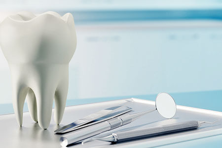
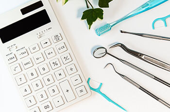
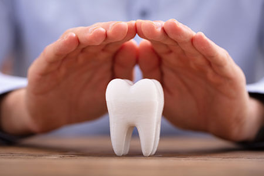
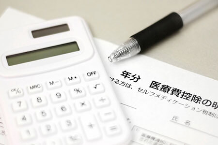

- TOP
- 治療費について
河原歯科クリニックの自費診療の治療費

JR京都線高槻駅より徒歩3分、阪急電鉄京都本線高槻市駅より徒歩5分の場所にある、「河原歯科クリニック」の自費診療の治療費の料金表です。当クリニックは2008年の開院以来、大阪府高槻市の皆様のお口の健康をサポートしております。実際の費用は、お口の状態や治療方法のご提案の際にご提示します。こちらではおもな治療費用の目安をご案内しています。
料金表
インプラント関連
| CTシュミレーション | 検査・撮影料料込み | ¥33,000 |
|---|---|---|
| ガイド作製料料 | 検査・撮影料料込み | ¥55,000 |
| インプラント１次 手術料 | 一部位(１回法) | ¥110,000 |
| インプラント１次 手術料 | 一部位(２回法) | ¥88,000 |
| インプラント体 | 一本 | ¥132,000 |
| インプラント2次 手術料 | 一本 | ¥55,000 |
| インプラントプロビジョナル | 一本 | ¥11,000 |
| インプラント上部構造 （ポンティック含む） |
¥176,000～ | |
| GBR（大、チタンメッシュ使用） | ¥165,000 | |
| GBR（4歯分以上、一部位） | ¥110,000 | |
| GBR（3歯分まで、一部位） | ¥88,000 | |
| GBR（1歯分） | ¥55,000 | |
| FGG | ¥33,000 | |
| CTG | ¥44,000 | |
| オステオトーム | ¥82,500 | |
| サイナスリフト | ¥275,000 | |
| 磁性アタッチメント、ロケーター | ¥77,000 |
インプラント関連
| 1、再生療法（4歯分以上） EMD使用 |
（手術料料別途） | ¥110,000 |
|---|---|---|
| 2、再生療法（3歯分まで） EMD使用 |
（手術料料別途） | ¥77,000 |
| 3、再生療法（1歯）EMD使用 | （手術料料別途） | ¥44,000 |
| 4、自費歯周外科 | 一歯 | ¥38,500 |
自費義歯関連
| 金属床：チタン | ¥418,000～ |
|---|---|
| 金属床：コバルト | ¥315,000～ |
| ノンクラスプ義歯 | ¥115,500～ |
自費歯冠修復関連
| Metal Bond(コア込) | ¥110,000 | |
|---|---|---|
| e-maxクラウン | 臼歯 | ¥93,500 |
| e-maxクラウン | 前歯 | ¥110,000 |
| オールジルコニアクラウン | ¥110,000 | |
| ジルコニアオールセラミッククラウン | ¥132,000 | |
| ジルコニアオールセラミッククラウン | プレミアム | ¥176,000 |
| Laminated Veneer | ¥110,000 | |
| Gold FCK | 大臼歯 | ¥110,000 |
| Gold Fck | 小臼歯 | ¥99,000 |
| Pala Fck | ¥38,500 | |
| Fiber Core (自費歯冠修復を伴わない場合) |
¥11,000 | |
| Gold Core | ¥27,500 | |
| pala Core | ¥5,500 |
自費の詰め物
| Ceramic Inlay（e-max） | ¥66,000 | |
|---|---|---|
| Gold In | (大臼歯MOD） | ¥71,500 |
| Gold In | (大臼歯MO, OD,小臼歯MOD） | ¥66,000 |
| Gold In | (小臼歯MO,OD） | ¥60,500 |
| 自費レジン充填（前歯部） | ¥33,000～¥66,000 | |
| 自費レジン充填（臼歯部、単純） | ¥22,000 | |
| 自費レジン充填（臼歯部、複雑） | ¥33,000 |
小児矯正
| MTM（小） | ¥38,500 |
|---|---|
| MTM（大） | ¥66,000 |
| インプラントアンカーのみ | ¥27,500 |
| インプラントアンカー使用MTM | ¥55,000～ |
その他
| 便宜抜歯 | ¥7,700 |
|---|---|
| フッ素 | ¥1,650 |
| ホワイトニング（上下顎） | ¥38,500 |
| ホワイトニング（片顎） | ¥22,000 |
| ホワイトニングジェル（1本分） | ¥2,200 |
| リリーフジェル（2本分） | ¥1,650 |
| 歯牙漂白（1歯） | ¥22,000 |
| テルプラグ | ¥1,650 |
| クリーニング | ¥5,500 |
| gum pealing | ¥33,000 |
お支払い方法
お支払いは現金のほか、クレジットカードやデンタルローンにて承ります。くわしくは、カウンセリングや治療計画のご提案の際にご相談ください。
クレジットカードでのお支払い
当クリニックでは、自費診療のお支払いに関しては、クレジットカードをご利用いただけます。おもなクレジットカードのブランドに対応していますので、カードご利用の詳細は、受付またはお電話にてご確認ください。
デンタルローンでのお支払い

当クリニックでは、自費診療のお支払いに関しては、デンタルローンもご利用いただけます。デンタルローンとは、「歯科治療費」限定のローンです。デンタルローンの提供会社が、歯科医院でかかる治療費を患者様の代わりに立て替えますので、患者様は治療費に手数料を加えた額を分割して支払います。
支払い回数は一般的に6～84回までで、患者様のご都合に合わせて選べます。年間の金利は会社によって異なりますが、クレジットカードの分割払いなどと比べると、金利を格安に抑えられるのがメリットです。インプラント治療や矯正治療、審美治療などでご利用されることが多いお支払い方法です。詳細は受付またはお電話にてご確認ください。
自費診療の保証について

当クリニックでは、自費診療保証制度をご用意しています。ご予約いただいている定期検診にご来院いただき、既定のメインテナンスを受けていただいている方が対象です。歯冠修復物・インプラントは5年保証です。症例によって、条件や費用、保証期間が異なりますのでご相談ください。
医療費控除について

医療費控除とは、治療のために支払った医療費の一部が課税対象から控除される制度です。患者様やご家族の1年間（1月1日から12月31日）にかかったすべての治療費と、診療に通う際にかかった交通費の合計などが一定金額を超える場合、確定申告で医療費控除の申請をすると、条件を満たしていれば一定の税金が還付されます。
医療費控除は、家計を1つにする家族が、1年間に10万円（※所得金額の合計が200万円未満の人は、所得額の5％）を超える医療費を支払った場合に適用されます。この際、家族の同居・別居は問いません。なお、医療費控除の対象になるのは治療費用であり、美容のための処置は含まれません。
医療費控除額を算出する計算式は次の通りです。
- 1年間に支払った医療費
(審美治療を除く) + 交通費 - 保険などの
補てん額 - 10万円
（※） - 医療費控除対象額
(上限200万円)
実際に税務署から還付される金額は、総所得により区分される所得税率で計算されますので、所得税率の高い高所得者ほど還付金額は多くなります。くわしくは、国税庁のホームページをご覧になるか、お近くの役所の税務課にご相談ください。